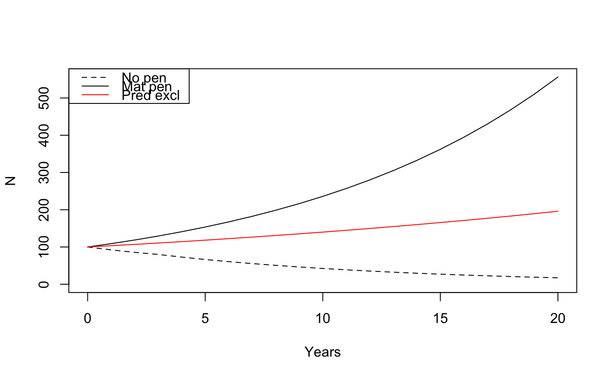

forecast.RdFunctions to set demographic and cost parameter, to perform forecasting, and to inspect the results.
wildlift_settings(pen.type = c("mat.pen", "pred.excl", "moose.red", "wolf.red", "cons.breed"), herd = NULL, ...) wildlift_forecast(settings, tmax = 20, pop.start = 100, fpen.prop, fpen.inds) wildlift_breakeven(forecast, lambda=1, type=c("prop", "inds"), max=10^4, tol=0.01) # S3 method for wildlift_settings print(x, ...) # S3 method for wildlift_forecast print(x, ...) # S3 method for wildlift_forecast plot(x, plot = TRUE, ...) # S3 method for wildlift_forecast lines(x, pen = TRUE, plot = TRUE, ...) # S3 method for wildlift_forecast summary(object, ...) # S3 method for summary.wildlift_forecast print(x, ...)
| pen.type | character: maternity penning, predator exclusion, moose reduction, wolf reduction, or conservation breeding. It can also be a settings object. |
|---|---|
| herd |
|
| settings | a settings object returned by |
| tmax | positive integer, number of years to forecast after initial year 0. |
| pop.start | positive integer, initial population size in year 0. |
| fpen.prop, fpen.inds |
|
| forecast | a forecast object returned by |
| lambda | numeric, annual intrinsic growth rate, must be >0. |
| type | what to provide as output: proportion ( |
| max | numeric (>0), maximum value for breakeven optimization when
|
| tol | numeric, tolerance limit, i.e. the maximum acceptable deviation
from |
| x, object | an object to print, summarize, plot, etc. |
| plot | logical, whether a plot is to be produced. |
| pen | logical, whether to display the pen or no-pen (baseline) results. |
| ... | additional arguments to functions. For |
The following cost parameters can be set by wildlift_settings:
pen.cap: how many adult females can live in a
single maternity pen.
pen.cost.setup: initial cost in thousands to set up pen.
pen.cost.proj: annual costs in thousands for project manager.
pen.cost.maint: annual cost in thousands for patrolling
and repairing fence.
pen.cost.capt: annual cost in thousands to capture cows, monitor,
survey, calf collar.
pen.cost.pred: annual cost in thousands for removing predators.
The following demographic parameters can be set by wildlift_settings:
c.surv.wild: calf survival rate in the wild, annual.
c.surv.capt: calf survival rate when captive, annual.
f.surv.wild: adult female survival when wild, annual.
f.surv.capt: adult female survival when captive, annual.
f.preg.wild: pregnancy rate when wild.
f.preg.capt: pregnancy rate when captive.
wildlift_settings returns a settings object.
wildlift_forecast returns a forecast object.
wildlift_breakeven returns a numeric value representing the
'breakeven' proportion of females penned where lambda
is within tolerance. It returns NA when
proportion satisfying the lambda criterion cannot be found,
alongside a warning.
The print method returns the input object x invisibly.
The summary method returns population and cost summaries
for the forecast object (cost is in million dollars).
The plot and lines methods return the plotted data invisibly
(years, pen and no-pen population size for plot;
years, pen or no-pen population size for lines).
Both methods produce plots as a side effect.
## Predefined settings (s1 <- wildlift_settings("mat.pen"))#> Caribou settings - pen type: mat.pen #> #> - c.surv.wild :0.163 #> - c.surv.capt :0.598 #> - f.surv.wild :0.853 #> - f.surv.capt :0.903 #> - f.preg.wild :0.92 #> - f.preg.capt :0.92 #> - pen.cap :35 #> - pen.cost.setup:500 #> - pen.cost.proj :80 #> - pen.cost.maint:300 #> - pen.cost.capt :250 #> - pen.cost.pred :0(s2 <- wildlift_settings("pred.excl"))#> Caribou settings - pen type: pred.excl #> #> - c.surv.wild :0.163 #> - c.surv.capt :0.72 #> - f.surv.wild :0.853 #> - f.surv.capt :0.95 #> - f.preg.wild :0.92 #> - f.preg.capt :0.92 #> - pen.cap :35 #> - pen.cost.setup:1868 #> - pen.cost.proj :80 #> - pen.cost.maint:600 #> - pen.cost.capt :200 #> - pen.cost.pred :80## Modifying predefined settings wildlift_settings("mat.pen", c.surv.capt=0.65, pen.cap=30)#> Caribou settings - pen type: mat.pen #> #> - c.surv.wild :0.163 #> - c.surv.capt :0.65 #> - f.surv.wild :0.853 #> - f.surv.capt :0.903 #> - f.preg.wild :0.92 #> - f.preg.capt :0.92 #> - pen.cap :30 #> - pen.cost.setup:500 #> - pen.cost.proj :80 #> - pen.cost.maint:300 #> - pen.cost.capt :250 #> - pen.cost.pred :0wildlift_settings(s1, c.surv.capt=0.65, pen.cap=30)#> Caribou settings - pen type: mat.pen #> #> - c.surv.wild :0.163 #> - c.surv.capt :0.65 #> - f.surv.wild :0.853 #> - f.surv.capt :0.903 #> - f.preg.wild :0.92 #> - f.preg.capt :0.92 #> - pen.cap :30 #> - pen.cost.setup:500 #> - pen.cost.proj :80 #> - pen.cost.maint:300 #> - pen.cost.capt :250 #> - pen.cost.pred :0## Forecast based on settings for 75% females penned (f1 <- wildlift_forecast(s1, fpen.prop = 0.75))#> Caribou forecast - pen type: mat.pen #> #> - tmax :20 #> - pop.start:100 #> - fpen.prop:0.75(f2 <- wildlift_forecast(s2, fpen.prop = 0.75))#> Caribou forecast - pen type: pred.excl #> #> - tmax :20 #> - pop.start:100 #> - fpen.prop:0.75#> Caribou forecast - pen type: mat.pen #> #> - tmax :20 #> - pop.start:100 #> - fpen.prop:0.75 #> #> - npens :3 #> - lam.pen :1.03 #> - lam.nopen :0.914 #> - Nend.nopen :17 #> - Nend.pen :195 #> - Nend.diff :178 #> - Cost.total :30.5 #> - Cost.percap:0.171summary(f2)#> Caribou forecast - pen type: pred.excl #> #> - tmax :20 #> - pop.start:100 #> - fpen.prop:0.75 #> #> - npens :7 #> - lam.pen :1.09 #> - lam.nopen :0.914 #> - Nend.nopen :17 #> - Nend.pen :556 #> - Nend.diff :539 #> - Cost.total :87 #> - Cost.percap:0.161## Find 'breakeven' proportion of females penned where lambda=1 (b1 <- wildlift_breakeven(f1, lambda = 1))#> [1] 0.5171369(b2 <- wildlift_breakeven(f2, lambda = 1))#> [1] 0.3441178f3 <- wildlift_forecast(s1, fpen.prop = b1) f4 <- wildlift_forecast(s2, fpen.prop = b2) ## See that lines are truly flat op <- par(mfrow = c(1, 2)) plot(f3, main = "Mat pen") plot(f4, main = "Pred excl")par(op)